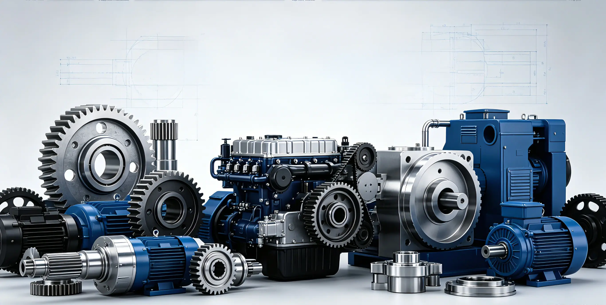

Seizing the Manufacturing Trend: High-Efficiency Stainless Steel Pipe Production Lines Drive Enterprise Transformation and Upgrading

In today's pipe processing industry, characterized by fierce competition within a saturated market, "price wars" have lost their effectiveness; "quality" and "efficiency" have become the lifelines determining a company's survival. Faced with the dual pressures of fluctuating raw material prices and rising labor costs, upgrading to advanced stainless steel welded pipe machinery is no longer a matter of choice—it is an imperative.
This article provides an in-depth analysis of how to gain a competitive edge in a cutthroat market by optimizing equipment configuration.
I. Laying a Solid Foundation: High-Precision Stainless Steel Pipe Mills as Core Competitiveness
As a core asset for pipe processing enterprises, the stability of the stainless steel pipe mill directly determines product yield. Aging equipment constantly erodes profits due to issues such as unstable forming, surface scratching, and significant deviations in roundness.
New-generation, high-precision stainless steel welded pipe mills utilize advanced forming processes and servo control systems; they not only easily handle the production of thinner-walled pipes but also significantly reduce material waste. For manufacturers striving for excellence, investing in a high-precision stainless steel pipe mill is the crucial first step toward reducing costs and increasing efficiency.
II. A Revolution in Speed: High-Frequency Welded Pipe Units Break Through Production Ceilings
In the sectors of industrial and structural piping, efficiency equates to cash flow. Traditional welding speeds often act as a bottleneck limiting production capacity, but the advent of "high-frequency welded pipe units" has perfectly resolved this pain point.
High-frequency equipment leverages the skin effect of electric current to complete welding in an extremely short time, resulting in a minimal heat-affected zone at the weld seam. Coupled with a fully automated pipe-making process, enterprises can easily achieve continuous, high-speed production—from uncoiling, forming, and welding to cut-to-length operations. Introducing high-frequency welded pipe units equips your factory with the robust delivery capabilities needed to handle large-volume, urgent orders, allowing you to leave behind the dilemma of having to turn down business.
III. Seizing the "Blue Ocean": Production Equipment for Drinking Water Pipes Opens a High-Profit Avenue
As public standards for drinking water health rise, the adoption of stainless steel water pipes in households has become a major trend. This market segment offers lucrative profits but imposes extremely rigorous demands on equipment. Specialized production equipment for drinking water pipes is far superior to standard decorative pipe machinery; it must come equipped with high-standard internal weld bead smoothing, in-line solution annealing, and eddy current testing capabilities. Only by deploying a comprehensive, high-end stainless steel pipe production line can a manufacturer consistently produce thin-walled stainless steel water pipes that meet national hygiene standards, thereby securing a strong foothold in this emerging, high-potential market.
IV. One-Stop Solutions: A Value Leap from Single Machines to Complete Lines
Modern factories require far more than just a single machine; they need a complete, integrated solution. A top-tier equipment manufacturer should provide services that cover the entire lifecycle of stainless steel welded pipe machinery.
Whether you aim to procure a single high-efficiency welded pipe machine to boost capacity or plan to build an entirely new, digitized production line, choosing a manufacturer with robust R&D capabilities ensures a perfect match between equipment and process, eliminating technical gaps at the source.
The market ultimately rewards enterprises that are bold enough to be the first to embrace new technologies. By decisively adopting advanced high-frequency welded pipe units and specialized drinking water pipe production equipment, your company can not only reinforce the competitiveness of existing products but also rapidly expand into high-value-added market segments. In an era where quality and efficiency determine success, upgrading hardware is an investment in the future.